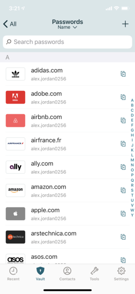
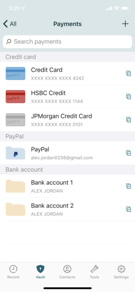
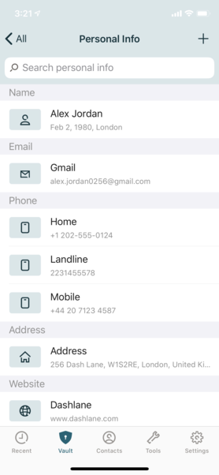
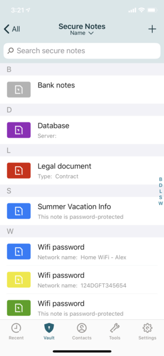

L'APPLICATION QUI VOUS FACILITE LE WEB
Avec Dashlane, centralisez et sécurisez tous vos mots de passe, données personelles sensibles et plus encore.
L'application vous permet d'enregistrer dans un coffre sécurisé, les mots de passe de vos sites préférés et ainsi
directement aller à l'essentiel. Sans perdre de temps à vous connecter...




DISPONIBLE SUR TOUT LES SUPPORTS
Dashlane saisit automatiquement vos mots de passe, vos coordonnées et vos informations de paiement sur tous les sites sur lesquels vous naviguez, quel que soit votre appareil.
Avec son système de synchronysation, toutes vos
données sont disponible à partir de n'importe quel appareil et vous y avez acces ou que vous soyez.